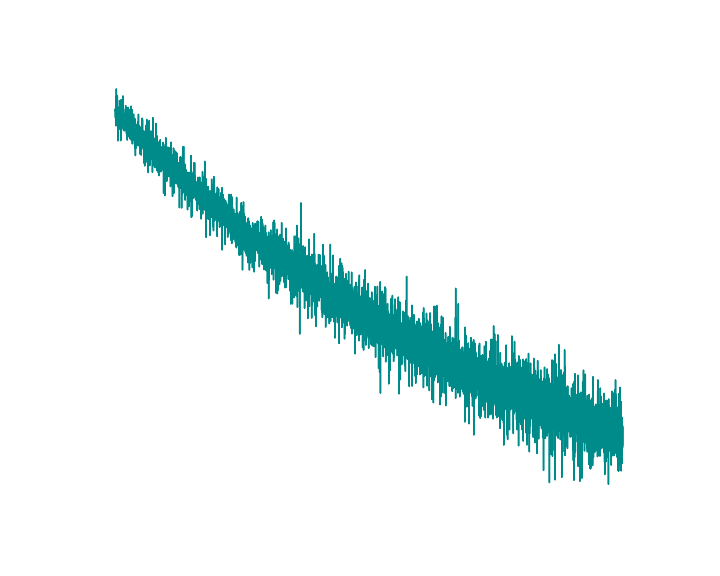
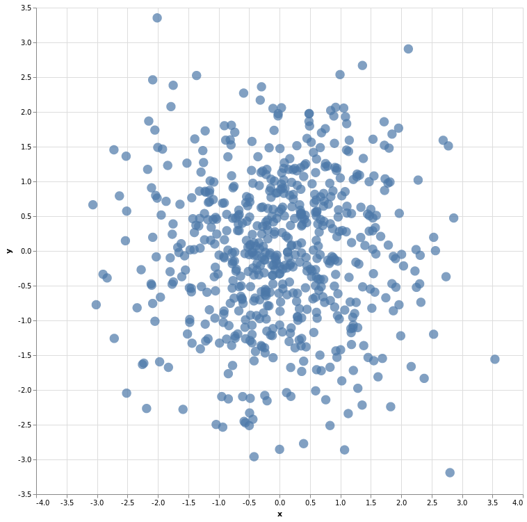

word2vec 3: skip-gram
Como já dito antes, o skip-gram faz um treinamento meio que ao contrário do cbow, no treinamento a rede neural recebe as palavras centrais para tentar prever as palavras de contexto e assim ajusta os pesos das camadas da rede neural aproximando valores para palavras semelhantes no hiperplano.
window = 2 pair_ids = [] text_size = len(corpus_text) corpus_text = np.array(corpus_text) mask = np.array( [i for i in range(-window, window+1) if i is not 0] ) for center_word in range(window, text_size-window): center_word_id = word2id[corpus_text[center_word]] for i in corpus_text[mask + center_word]: context_word_id = word2id[i] pair_ids.append([center_word_id, context_word_id]) pair_ids = np.array(pair_ids)
A única diferença do código acima para criar os pares de ids está na ordem: primeiro a palavra central e depois a palavra de contexto:
| central | contexto | central | contexto |
|---|---|---|---|
| 604 | 97 | máquina | desempenhando |
| 75 | 302 | turing | computação |
| 75 | 604 | turing | máquina |
| 75 | 97 | turing | desempenhando |
| 75 | 277 | turing | papel |
| 97 | 604 | desempenhando | máquina |
| 97 | 75 | desempenhando | turing |
| 97 | 277 | desempenhando | papel |
| 97 | 409 | desempenhando | importante |
| 277 | 75 | papel | turing |
| 277 | 97 | papel | desempenhando |
O modelo da rede neural não se difere muito da usada no cbow, a única diferença fica por conta do tamanho da entrada da primeira função linear, já que passaremos 1 id por vez e não 4 como no cbow.
class CBOW(torch.nn.Module): def __init__(self, vocab_size, emb_size): super(CBOW, self).__init__() self.embeddings = torch.nn.Embedding(vocab_size, emb_size) self.linear0 = torch.nn.Linear(emb_size, 512) # única diferença aqui self.linear1 = torch.nn.Linear(512, vocab_size) self.log_softmax = torch.nn.LogSoftmax(dim=1) def forward(self, x): out = self.embeddings(x) out = self.linear0(out) out = self.linear1(out) out = self.log_softmax(out) return out def get_word_emb(self, word_id): word = torch.LongTensor([word_id]) return self.embeddings(word).view(1, -1)
De modo geral o nível de erro (ou perda, nunca sei ao certo como traduzir "loss" neste contexto) no skip-gram é maior que no cbow, mas repito que o importante é que esteja havendo um aprendizado e não que a rede neural se adapte ao ponto de prever todas as palavras relacionadas ainda que ocasionalmente isso ocorra, para nós interessa o seguinte movimento: numa época a rede neural elevar os valores das palavras próximas na saída e afastar as mais distantes, assim naturalmente ela vai aprendendo a agrupar palavras em regiões de um hiperplano aproximando ou afastando de acordo com o modo como as palavras são usadas, tendendo a manter um distanciamento relacionado ao seu valor semântico.
Reduzindo as dimensões para visualizar a distribuição...
Logicamente dessa forma como implementei, o custo/perda/loss é mais alto que na implementação feita do cbow, afinal vamos aos poucos ajustando 4 resultados possíveis para cada termo. Neste exemplo aumentei a quantidade de épocas para 2500 e ainda assim ficou imensamente distante do resultado da implementação do cbow neste aspecto, porém a relação entre as palavras se mostrou um pouco melhor ainda que longe do ideal.
| rank sim cos | rank dist eucl | ||
|---|---|---|---|
| muitos | 0.14544 | muitos | 0.07375 |
| poderia | 0.26087 | code | 0.08692 |
| ceruzzi | 0.28141 | ceruzzi | 0.08939 |
| code | 0.28206 | condados | 0.09595 |
| britânica | 0.28430 | mortem | 0.09709 |
| mortem | 0.33544 | atos | 0.10284 |
| condenado | 0.33660 | teórica | 0.10357 |
| comerciantes | 0.33929 | condenado | 0.10376 |
| cabeceira | 0.34548 | rápido | 0.10433 |
| condados | 0.36041 | prazer | 0.10648 |
Só lembrando que segui o mesmo padrão de cores:
| amarelo: | Palavra escolhida |
|---|---|
| vermelho: | Termos mais próximos pela similaridade de cossenos |
| azul: | Termos mais próximos pela distância euclidiana |
| roxo: | Termos que ambas as métricas concordam |